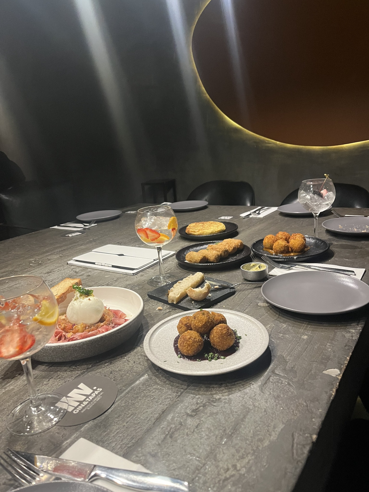

Invernadero Bar
Ubicado en el barrio de Recoleta, Invernadero propone una experiencia gastronómica que combina coctelería, una cuidada ambientación y opciones para compartir. Su propuesta invita a disfrutar de una salida relajada, donde los tragos y la comida tienen un papel protagonista.
¿Por qué visitarlo?
Ideal para quienes buscan una experiencia de coctelería acompañada por una propuesta gastronómica para compartir, en un ambiente especial dentro de Recoleta.
Ubicación: Agüero 2502, Recoleta (CABA)
Horario: Lunes a domingo, de 9 am a 1 am.
Propuesta: Coctelería y gastronomía para compartir